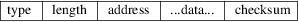

srec_dec_binary - DEC Binary (XXDP) file format
The DEC Binary (XXDP) format was used on the PDP 11 series machines. This is a binary format, and is not readable or editable with a text editor. The file consists of records of the form

The field are defined as follows:
|
type |
Two byte little-endian value. Must always be 1. | ||
|
length |
Two byte little-endian value. This is the number of bytes in the data, plus six. | ||
|
address |
Two byte little-endian value. This is the load address of the data. | ||
|
data |
The data is simple raw bytes. There are (length-6) of them. |
checksum
The checcksum is a single byte. It is the negative of the simple summ of all the header and data bytes.
If the record length is exactly 6 (i.e. no data), this is the execution start address record, indicating the transfer address.
In addition there may be NUL padding characters between records. It is common for records to be padded so that they start on even byte boundaries. In the days of paper tape, it was common for the file to have many leading NULs, to generate blank leader on the tape.
Size
Multiplier
In general, raw binary data will expand in sized by
approximately 1.03 times when represented with this
format.
srec_cat
version 1.65
Copyright (C) 1998, 1999, 2000, 2001, 2002, 2003, 2004,
2005, 2006, 2007, 2008, 2009, 2010, 2011, 2012, 2013, 2014,
2018, 2019, 2022 Peter Miller
The srec_cat program comes with ABSOLUTELY NO WARRANTY; for details use the ’srec_cat -VERSion License’ command. This is free software and you are welcome to redistribute it under certain conditions; for details use the ’srec_cat -VERSion License’ command.